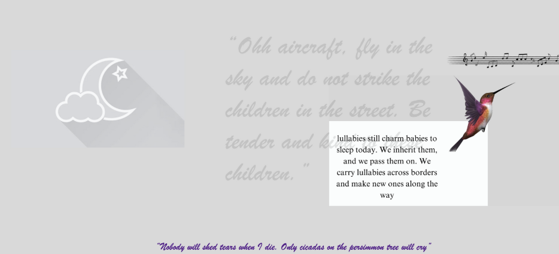
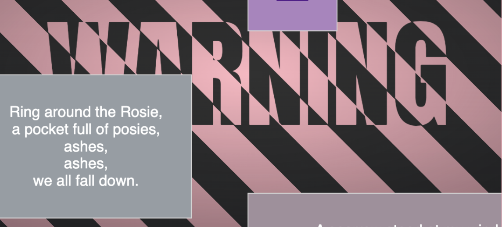

Web Art


"I want to sing but I don't know any songs" is an interactive web art project that reinterprets childhood lullabies through fragmented visuals and nonlinear interaction, exploring themes of displacement, inherited memory, and loss.
The interface is designed as a nonlinear journey, where users navigate through scattered remnants of memory, piecing together the silent weight of histories passed down through generations.
Nonlinear Navigation – Users uncover fragments of memory at their own pace, shaping a deeply personal experience.
Motion & Visual Layering – Subtle animations and layered elements enhance emotional depth.
Minimalist UI with Intentional Disruption – Design choices reflect both the intimacy and fragmentation of memory.
User-Driven Storytelling – The interface prioritizes intuitive exploration, allowing users to engage with the duality of lullabies—both comforting and reflective of historical grief.